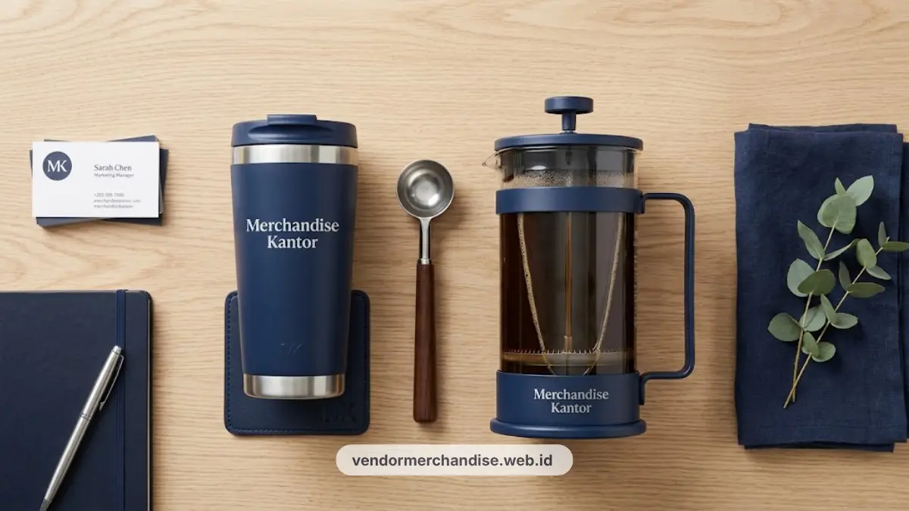

Kesan pertama klien terhadap sebuah perusahaan sering kali terbentuk dari detail kecil, termasuk merchandise yang diterima saat kunjungan bisnis atau acara korporat. Merchandise kantor eksklusif bukan sekadar hadiah, melainkan representasi identitas dan standar kualitas perusahaan di mata klien, mitra bisnis, maupun tamu penting lainnya di lingkungan perkantoran Jakarta.
Kriteria Merchandise Layak untuk Klien Korporat
Merchandise layak dikirim ke klien korporat apabila memenuhi standar material premium, desain custom yang konsisten dengan identitas brand, dan kemasan presentasi yang rapi.
Beberapa parameter penilaian yang umum digunakan tim procurement meliputi daya tahan material, relevansi fungsi produk dengan aktivitas kerja klien, serta konsistensi warna dan logo dengan panduan brand perusahaan. Merchandise yang dipilih secara asal tanpa memperhatikan kualitas berisiko menurunkan persepsi profesionalisme perusahaan di mata klien.
9 Rekomendasi Kategori Merchandise Kantor Eksklusif
Berikut sembilan kategori merchandise kantor eksklusif yang umum dipesan untuk kebutuhan klien korporat di Jakarta:
1. Tea Set Perusahaan Custom Logo
Set teh dengan finishing porselen atau kaca premium, dicetak logo perusahaan, cocok ditempatkan di ruang meeting eksekutif.
2. Coffee dan Drinkware Set Korporat
Cangkir, tumbler, atau french press dengan desain custom untuk mendukung suasana hospitality ruang tamu kantor.
3. Flashdisk Custom Logo
Media penyimpanan data dengan desain casing yang dapat dicetak logo dan warna brand, cocok sebagai souvenir teknis.
4. Powerbank Custom Logo
Powerbank kapasitas menengah hingga besar dengan cetak logo, mendukung mobilitas klien dan karyawan yang sering bepergian.
5. Lanyard ID Card Custom Logo
Tali identitas dengan material dan warna sesuai identitas visual perusahaan, digunakan harian oleh karyawan dan tamu.
6. Notebook dan Alat Tulis Eksekutif
Buku catatan hardcover dengan cetak logo, sering dipadukan dengan pulpen premium dalam satu paket welcome kit.
7. Tas Korporat dan Tote Bag Premium
Tas berbahan kanvas atau kulit sintetis dengan cetak logo, digunakan sebagai kemasan luar untuk paket merchandise lain.
8. Plakat dan Penghargaan Korporat
Plakat akrilik atau logam dengan ukiran logo, digunakan pada acara serah terima kerja sama atau penghargaan klien.
9. Paket Welcome Kit Kombinasi
Kombinasi beberapa item di atas dalam satu kemasan presentasi, disesuaikan dengan tema acara atau kunjungan klien.

Cara Memilih Vendor Merchandise yang Konsisten
Vendor yang konsisten ditandai dari kemampuan menjaga kualitas produksi, ketepatan waktu pengiriman, dan detail hasil cetak logo pada setiap pemesanan.
Perusahaan sebaiknya memeriksa contoh hasil cetak sebelum produksi massal, memastikan bahan baku sesuai spesifikasi yang dijanjikan, dan mengonfirmasi estimasi waktu produksi secara tertulis. Konsistensi kualitas antar batch pemesanan menjadi faktor penting terutama untuk perusahaan yang memesan merchandise secara berkala.
Studi Kasus Umum Perusahaan di Jakarta
Banyak perusahaan multinasional di kawasan CBD Jakarta mengalokasikan anggaran khusus untuk merchandise korporat setiap kali menerima kunjungan klien penting atau menyelenggarakan acara serah terima kerja sama.
Paket merchandise yang dipersiapkan dengan matang, mulai dari tea set di ruang meeting hingga welcome kit berisi souvenir teknologi, umumnya menjadi bagian dari strategi menjaga hubungan bisnis jangka panjang dengan klien.
Pemilihan kategori merchandise idealnya disesuaikan dengan konteks acara. Kunjungan formal di ruang eksekutif lebih cocok dengan tea set dan plakat, sementara acara gathering atau konferensi lebih sesuai dengan souvenir teknologi dan tas korporat.
Untuk melengkapi kebutuhan korporat Anda, perusahaan dapat melihat pilihan merchandise eksklusif custom untuk corporate gift sebagai alternatif paket hadiah VIP yang lebih berkesan.

Hubungi Kami untuk Paket Merchandise Kantor Eksklusif
Siapkan kesan pertama terbaik untuk klien korporat Anda bersama Vendor Merchandise Kantor. Tim kami siap membantu menyusun paket merchandise sesuai kebutuhan acara, anggaran, dan identitas brand perusahaan Anda, dengan layanan konsultasi dan pengiriman ke seluruh area perkantoran Jakarta.
Hubungi Vendor Merchandise Kantor sekarang melalui formulir konsultasi atau layanan WhatsApp untuk mendapatkan penawaran paket custom terbaik.